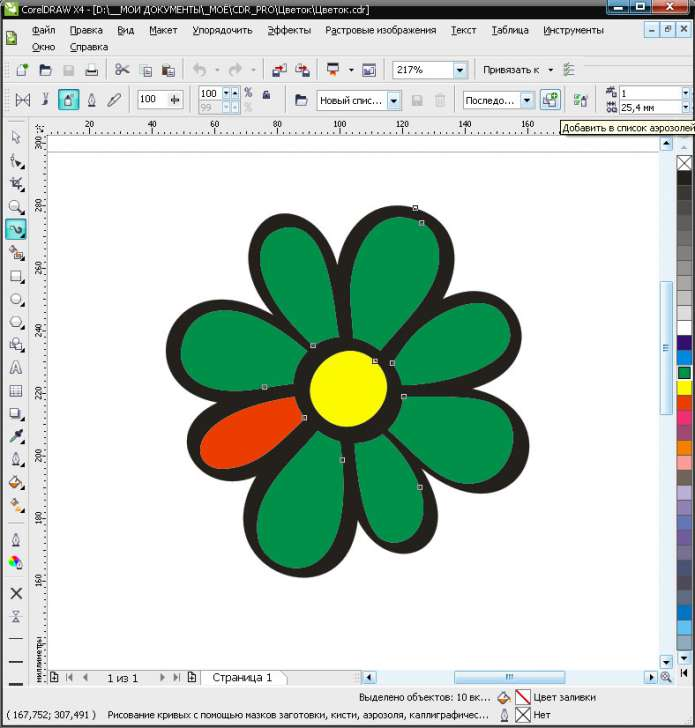

Да, за время в моей машине также создалась коллекция новых спрайтов и мазков. А вот теперь возник такой вопросик, среди мойх "мазков" много по внешнему виду похожих меж собой и в политре докера трудновато их отличить. Так вот может Corel умеет в политре-списке выбора показывать не миниатюру а, на пример, название файла мазка? М-м... надеюсь правильно написал, всетаки русский язык мне не родной :)
Solowejka, возможно, позже опишу как это сделать :)

И не забудь сохранить мазок художественного оформления!
Да, за время в моей машине также создалась коллекция новых спрайтов и мазков. А вот теперь возник такой вопросик, среди мойх "мазков" много по внешнему виду похожих меж собой и в политре докера трудновато их отличить. Так вот может Corel умеет в политре-списке выбора показывать не миниатюру а, на пример, название файла мазка?
М-м... надеюсь правильно написал, всетаки русский язык мне не родной :)